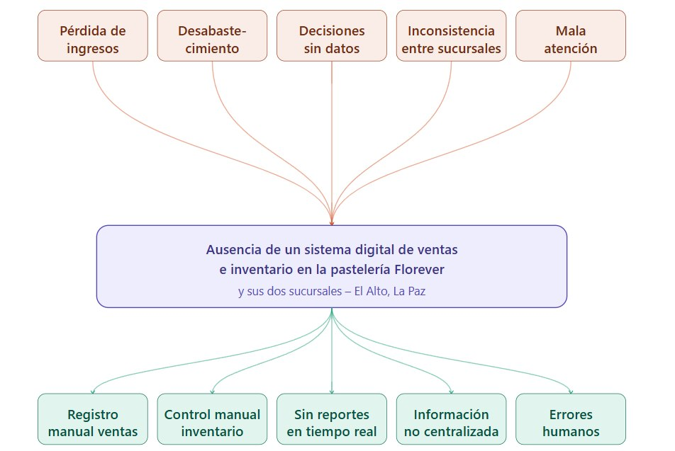
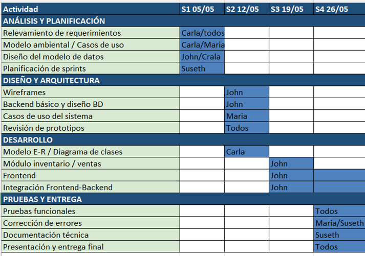

Introducción
En la actualidad, la gestión de ventas e inventarios en pequeñas y medianas empresas ha experimentado una transformación muy grande gracias al avance de nuevas tecnologías de la información. En los negocios del ámbito alimenticio, como lo son las pastelerías y/o cafeterías, no son ajenos a esta realidad: la administración manual de pedidos, stock de insumos y registro de ventas representa una carga operativa que incrementa el margen de error y existe una deficiencia dentro del negocio. El presente proyecto surge de la necesidad de digitalizar y optimizar los procesos comerciales que tiene una pastelería local “Florever” que opera actualmente con dos sucursales. Hoy en día, el control de ventas e inventarios se realiza de forma manual casi en su totalidad, lo que dificulta la toma de decisiones oportunas para el negocio y genera pérdidas por desabastecimiento o por el contrario sobrestock, y limita la visibilidad del rendimiento del negocio en tiempo real. Teniendo en cuenta esta problemática, proponemos el desarrollo de un sistema de ventas e inventario web que permita registrar productos, gestionar el stock de insumos, procesar ventas y generar reportes, todo con una plataforma centralizada accesible ambas sucursales. Esta solución busca mejora de la productividad el personal, aparte reducir errores operativos y brindar información confiable para un mejor manejo a nivel de gerencia del negocio
Antecedentes
Antecedentes tecnológicos
La evolución de los sistemas de gestión de ventas ha sido notable. Los primeros sistemas Point of Sale (POS) surgieron en la década de 1980 como terminales electrónicas que sustituyeron a las cajas registradoras tradicionales, permitiendo un registro de ventas más ordenado. Con la llegada de Internet y las aplicaciones web en los años 2000, estos sistemas se trasladaron a plataformas accesibles desde cualquier dispositivo con conexión, reduciendo la dependencia de hardware específico. En el contexto boliviano actual, al analizar empresas que ofrecen este tipo de servicios —por ejemplo, la pastelería “Michelline”— se observa que muchas no cuentan con un sistema de ventas en línea eficiente. La página web de esta pastelería apenas contiene documentos en PDF y no facilita el proceso de compra ni la realización de pedidos; su modelo operativo parece basarse en la atención por WhatsApp y llamadas telefónicas. Esto resulta sorprendente, pues cabría esperar que un negocio de su prestigio dispusiera de una solución digital más robusta para la gestión de pedidos y ventas. Y lo más lamentable es que esto se repite en muchas otras pastelerías: aunque suelen contar con un marketing eficaz, principalmente a través de páginas de Facebook, la confirmación final de cualquier pedido se realiza casi siempre mediante llamada telefónica o mensaje por WhatsApp.
Antecedentes sociales
En Bolivia, y particularmente en la ciudad de La Paz y El Alto, el sector de repostería y pastelería casera ha tenido un incremento gradual en estos últimos años, impulsados principalmente por el emprendimiento local y la creciente demanda de productos de confitería para distintos eventos sociales, celebraciones e incluso el consumo diario. Sin embargo, gran parte de estos negocios aún operan con métodos tradicionales de registro: cuadernos de ventas, hojas de cálculo básicas o simplemente de memoria, lo que genera una grave desorganización, pérdida de información y dificultades para escalar el negocio. Es de este modo que tomamos y analizamos una pastelería en particular, ubicada en la ciudad de El Alto. La falta de distintas herramientas tecnológicas en el sector alimenticio en general también responde a una diferencia digital que afecta a pequeños emprendedores que no cuentan con formación técnica ni recursos para implementar sistemas comerciales complejos. Esta realidad social evidencia la necesidad de soluciones tecnológicas simples, económicas y adaptadas al contexto local, que permitan a los pequeños empresarios competir con mayor eficiencia y mejorar la calidad de su gestión interna y por ende pueda existir un progreso significativo del negocio.
Planteamiento del Problema
Problema central
¿De qué manera la ausencia de un sistema digital de ventas e inventario afecta la eficiencia operativa y la toma de decisiones en la pastelería y sus dos sucursales?
Problemas secundarios
- La falta de un registro automatizado de ventas genera pérdida de información y dificulta el seguimiento de los ingresos diarios de la pastelería.
- El control manual del inventario de insumos provoca desabastecimiento o sobrestock, afectando la producción y la rentabilidad del negocio.
- La ausencia de reportes en tiempo real limita la capacidad de los administradores para tomar decisiones oportunas sobre el negocio.
- La falta de centralización de la información entre las dos sucursales genera inconsistencias en los datos y dificulta la gestión coordinada del negocio.
- Los errores humanos derivados del registro manual impactan negativamente en la atención al cliente y en la experiencia de compra.
Árbol de Problemas

Propósito del estudio
Objetivo general
Desarrollar un sistema web de gestión de ventas e inventario para la pastelería y sus dos sucursales, que permita centralizar el registro de ventas, controlar el stock de insumos en tiempo real y generar reportes que faciliten la toma de decisiones administrativas para tener una mayor rentabilidad en el negocio.
Objetivos específicos
- Implementar un módulo de registro de ventas automatizado que permita al personal de cada sucursal registrar transacciones de forma rápida, precisa y sin duplicidad de información, eliminando la dependencia de registros manuales en papel o cuadernos.
- Desarrollar un módulo de control de inventario que registre entradas y salidas de insumos en tiempo real, genere alertas de stock mínimo y permita al administrador anticiparse a situaciones de desabastecimiento o sobrestock que afecten la producción.
- Diseñar un módulo de reportería y estadísticas que proporcione a los administradores información consolidada sobre ventas diarias, semanales y mensuales, permitiendo un análisis oportuno del rendimiento del negocio sin necesidad de consolidaciones manuales.
- Construir una arquitectura centralizada que unifique la información de las dos sucursales en una sola plataforma, garantizando consistencia de datos, acceso simultáneo y visibilidad global del negocio desde cualquier punto con conexión a internet.
- Diseñar una interfaz de usuario intuitiva y de fácil manejo, que reduzca la curva de aprendizaje del personal operativo y minimice la ocurrencia de errores humanos durante el proceso de atención al cliente y registro de ventas.
Justificación
Justificación Económica
Optimización de insumos y mitigación de mermas
El control automático del inventario permite una gestión precisa de insumos perecederos —tales como mantequilla, huevos, cremas y frutas—, los cuales representan una parte crítica de costos variables. Al evitar el sobrestock y mejorar la rotación, se reducen drásticamente las pérdidas por vencimiento o deterioro de materia prima. Al mismo tiempo, el sistema garantiza la disponibilidad constante de productos mediante alertas de stock crítico, eliminando paros en la producción que históricamente derivan en ventas perdidas y, más importante aún, en la posible fuga de clientes hacia la competencia por falta de productos específicos. Esta precisión en el manejo de insumos permite, además, establecer estándares de costos por receta, lo que facilita un escrutinio más estricto sobre el desperdicio generado durante los procesos de transformación.
Rigurosidad financiera y trazabilidad operativa
La transición hacia el registro automatizado de ventas elimina las inconsistencias, errores de redondeo y faltantes que suelen ser recurrentes en el manejo manual de los cierres de caja. Este sistema dota a la administración de una visibilidad financiera sin precedentes, permitiendo monitorear en tiempo real los ingresos, los márgenes de ganancia por línea de producto y los picos de demanda según la estacionalidad local. Contar con esta trazabilidad financiera no solo garantiza la transparencia absoluta en la recaudación, sino que transforma datos crudos en inteligencia comercial; la administración podrá realizar análisis comparativos de rendimiento entre sucursales, identificando qué unidades son más rentables y cuáles requieren ajustes en su modelo operativo o en su mix de productos.
Eficiencia administrativa y reingeniería de procesos
La automatización de tareas administrativas —como la consolidación de reportes, el conteo físico de inventario y el cuadre de ventas— libera al capital humano de funciones operativas de bajo valor agregado. Que exista este ahorro representa una optimización de la productividad que permite redirigir al personal hacia actividades estratégicas, tales como el control de calidad, la atención personalizada al cliente o la diversificación de la oferta. “Ser eficiente”. Esta reasignación de tiempo del personal hacia labores de valor representa, en sí misma, una reducción del costo operativo total por unidad de producto terminado.
Justificación Tecnológica
Robustez y arquitectura de datos
El uso de bases de datos relacionales es una decisión técnica que asegura la integridad, consistencia y seguridad de la información financiera y principalmente operativa. Al garantizar que todos los datos de transacción, inventario y registros de clientes estén centralizados y normalizados, se erradican los silos de información que suelen dificultar la administración entre diferentes puntos de venta. Esta estructura, combinada con un diseño de interfaz responsiva, asegura que el sistema sea funcional tanto en terminales de escritorio de alto rendimiento, como en dispositivos móviles, pc’s, etc. Utilizados en el área de producción o atención al cliente, adaptándose a los requerimientos que ameritan en este siglo 21.
Ecosistema omnicanal y conectividad
El sistema está diseñado bajo un paradigma de omnicanalidad que permite integrar múltiples puntos de contacto —redes sociales, mensajería instantánea como WhatsApp y el sitio web de la pastelería— dentro de una plataforma unificada. Esta integración tecnológica elimina la fragmentación en la gestión de pedidos, permitiendo al personal centralizar la demanda proveniente de diversos canales digitales en un único flujo de trabajo.
Analítica predictiva e inteligencia de negocio
Más allá de la operatividad, el núcleo del sistema integra capacidades de análisis predictivo que transforman el registro de transacciones en conocimiento estratégico. Mediante el procesamiento de datos históricos, el sistema permite identificar patrones de consumo, prever tendencias estacionales y anticipar volúmenes de demanda específicos para cada línea de producto. Esta capacidad de análisis dota a la administración de un mecanismo para la toma de decisiones basada en métricas empíricas y no en la intuición; la capacidad de entender con precisión qué busca el consumidor antes de que la demanda se materialice permite ajustar proactivamente la cadena de suministro y la planificación de producción, minimizando riesgos y maximizando la satisfacción del usuario final.
Alcances
Alcance Técnico
“El sistema se diseñará como una aplicación web orientada a centralizar la gestión de ventas, inventario y reportes, incorporando módulos de administración de usuarios, control de productos y seguimiento de insumos, lo cual coincide con funcionalidades presentes en soluciones especializadas para pastelerías y panaderías.”
Para el frontend se empleará HTML5, CSS3 y JavaScript, con un framework de interfaz que garantice una experiencia de usuario fluida y responsiva. Para el backend se utilizará un lenguaje de programación orientado a objetos con un framework web que facilite la construcción de APIs RESTful para la comunicación entre el cliente y el servidor. La base de datos será relacional, gestionada mediante un sistema como MySQL o PostgreSQL, lo cual garantizará la integridad referencial de los datos y la posibilidad de realizar consultas complejas para la generación de reportes.
El sistema contará con los siguientes módulos funcionales:
Módulos funcionales
- Gestión de usuarios y roles.
- Gestión de productos y categorías.
- Registro y consulta de ventas.
- Control de inventario de insumos y alertas de stock mínimo.
- Reportes de ventas por sucursal y periodo.
- Panel de administración centralizado.
Alcance Práctico
En el plano operativo, el sistema cubrirá los procesos diarios esenciales de la pastelería, orientados a mejorar la eficiencia en ventas, control de inventarios y toma de decisiones basadas en información consolidada.
Procesos operativos
- Operaciones de caja: el personal de caja podrá registrar ventas de manera rápida, seleccionar productos del catálogo, aplicar descuentos o promociones preconfiguradas, generar y visualizar comprobantes de venta (ticket o recibo) y cerrar turnos. El flujo de venta estará optimizado para minimizar el tiempo de atención al cliente.
- Gestión de inventarios e insumos: el encargado de almacén podrá registrar entradas (compras o devoluciones) y salidas por uso o mermas, consultar niveles de stock por insumo y producto terminado, ejecutar ajustes de inventario y generar reportes de consumo. Se incorporarán alertas configurables que avisan cuando un insumo alcance un stock mínimo para facilitar la reposición.
- Administración centralizada: el administrador tendrá acceso a un panel donde se consolidan ventas por sucursal, gráficos resumidos por periodo, listado de productos más vendidos, margen básico por producto (si se registra costo), y herramientas para configurar usuarios, roles y permisos. Desde aquí se podrán establecer precios, promociones temporales y categorías de productos.
- Flujo de sucursales: aunque la plataforma es centralizada, cada sucursal operará con su punto de venta propio; las ventas se registran por punto, mientras que el inventario puede ser global y/o por sucursal según la configuración. Esto permite analizar rendimiento por local sin perder la visión del stock general de producción.
Exclusiones operativas
Esta versión no maneja cobros online, integraciones con sistemas de facturación del gobierno ni automatizaciones de logística (por ejemplo envío a domicilio). Tampoco se incluye gestión avanzada de clientes (CRM) con historial detallado, aunque se podrán almacenar datos básicos de clientes si se requiere registrar pedidos.
Beneficios prácticos esperados: reducción de errores en el registro de ventas, control más preciso de insumos, mejor visibilidad de productos más vendidos, y soporte a decisiones operativas como reposición y promociones.
Alcance Temporal
El proyecto se planifica mediante un esquema de desarrollo estructurado que busca garantizar la entrega de un sistema completo, estable y plenamente operativo. Este enfoque permite una ejecución ordenada de las distintas etapas del análisis y diseño de sistemas, juntando la funcionalidad requeridos por la pastelería.
- Duracion y fecha: el cronograma propuesto abarca aproximadamente cuatro semanas de desarrollo activo. El inicio se plantea el lunes 5 de mayo de 2026 y la finalización el viernes 30 de mayo de 2026
- Fases y actividades: las principales actividades del proyecto incluyen: análisis y levantamiento de requerimientos detallados (user stories), diseño de arquitectura y modelo de datos, diseño de interfaz de usuario (mockups y prototipos), desarrollo e integración de módulos (frontend y backend), pruebas funcionales e integración, corrección de errores, documentación y entrega/presentación final.
- Proceso de trabajo: Se trabajará bajo una lógica de bloques de desarrollo que permiten el avance constante de los módulos del sistema. Esta organización facilita la validación de cada funcionalidad con la administración, permitiendo recoger observaciones y realizar los ajustes necesarios para que el resultado final se alinee con las necesidades reales del negocio, asegurando que todas las herramientas queden integradas bajo una misma plataforma.
Alcance Geográfico
El despliegue inicial del sistema estará limitado a la operación de una pastelería con dos sucursales dentro del departamento de La Paz, con cobertura específica en la ciudad de El Alto. Se detallan las ubicaciones y cómo estas interactuarán con la plataforma central.
Ubicaciones cubiertas
- Sucursal Producción: Zona Santiago II, Calle 15 #1986.
- Sucursal Ventas: Zona Villa Bolívar Municipal, Calle Sucre #777.
Arquitectura de acceso:
Ambas sucursales accederán a la misma plataforma centralizada; la base de datos y la lógica de negocio residirán en el servidor central, de modo que ambas sucursales compartan catálogo de productos y datos administrativos. Sin embargo, las ventas y los movimientos de caja se registrarán de forma diferenciada por punto de venta para permitir reportes por sucursal.
Requisitos de conectividad:
El sistema requiere conexión a internet para operar en tiempo real con la central. Se recomienda contar con enlaces estables durante el horario de atención; para mitigar cortes temporales, se puede diseñar un modo de operación offline básico (cacheo de ventas locales y sincronización posterior) como mejora futura, pero no está incluido en la versión inicial.
Limitaciones geográficas:
En esta primera etapa no se contempla el despliegue en otras ciudades ni la configuración de más sucursales fuera del departamento de La Paz. Cualquier expansión geográfica futura requerirá planificación adicional sobre infraestructura (servidores, capacidad de red), ajuste de la arquitectura para mayor concurrencia y posibles cambios legales o fiscales según la jurisdicción.
Consideraciones logisticas:
estar la producción localizada en un sitio y la venta en otro, se deberá definir el flujo de transferencias de inventario entre centros (por ejemplo, despacho desde la producción hacia la sucursal), y registrar adecuadamente esas transferencias en el sistema para mantener coherencia de stock.
Metodologías
Metodología de Desarrollo: Proceso Unificado Ágil (AUP)
Para el desarrollo del sistema de ventas e inventario de la pastelería Florever se adoptó el Proceso Unificado Ágil (AUP, por sus siglas en inglés Agile Unified Process), metodología propuesta por Scott Ambler. El AUP es una versión simplificada del Proceso Unificado de Rational (RUP) que describe una aproximación al desarrollo de aplicaciones combinando conceptos del proceso unificado tradicional con técnicas ágiles, con el objetivo de mejorar la productividad. (Scribd)
La elección de esta metodología responde a las características propias del proyecto: un equipo de trabajo reducido, un alcance temporal acotado (cinco semanas de desarrollo activo) y la necesidad de entregar incrementos funcionales verificables al cliente al término de cada iteración. El AUP aplica técnicas ágiles incluyendo Desarrollo Dirigido por Pruebas (TDD), Modelado Ágil, Gestión de Cambios Ágil y Refactorización de Base de Datos para mejorar la productividad. (Blogger)
El AUP abarca siete flujos de trabajo, cuatro de carácter ingenieril y tres de apoyo: Modelado, Implementación, Prueba, Despliegue, Gestión de Configuración, Gestión de Proyectos y Ambiente. El flujo de Modelado agrupa los tres primeros flujos de RUP —Modelamiento del negocio, Requerimientos, y Análisis y Diseño—, unificándolos en una sola disciplina. EcuRed
Una ventaja clave que motivó la selección del AUP sobre otras metodologías ágiles como XP es que incluye explícitamente actividades y artefactos a los que la mayoría de desarrolladores ya están, de alguna manera, acostumbrados, constituyendo un proceso ágil que a la vez aporta la estructura que los gestores de proyecto requieren. Asimismo, el AUP prioriza la gestión de riesgos desde etapas tempranas: propone que aquellos elementos con alto riesgo obtengan prioridad en el proceso de desarrollo y sean abordados en etapas tempranas, para lo cual se crean y mantienen listas identificando los riesgos desde el inicio del proyecto. (ScribdBlogger)
El AUP dispone de cuatro fases equivalentes a las de RUP: Incepción o Creación, Elaboración, Construcción y Transición. A continuación se describe cómo cada una de estas fases se adapta al contexto específico del presente proyecto.
Fase de Inicio
El objetivo de la fase de Inicio es identificar el alcance inicial del proyecto, definir una arquitectura potencial para el sistema y obtener la aceptación por parte de las personas involucradas en el negocio. (Google Sites)
En el contexto del presente proyecto, esta fase comprendió las siguientes actividades:
- Levantamiento de requerimientos. Se realizaron reuniones con la propietaria y el personal operativo de las dos sucursales de la pastelería Florever para identificar los procesos actuales de registro de ventas, control de inventario y gestión de pedidos. A partir de estas sesiones se elaboraron las historias de usuario que sirvieron de base para la planificación del desarrollo.
- Definición del alcance. Se delimitaron los módulos funcionales que formarían parte del sistema en su versión inicial: gestión de ventas, control de inventario de insumos, reportes consolidados por sucursal y administración de usuarios con roles diferenciados. Asimismo, se documentaron explícitamente las exclusiones, tales como la facturación electrónica oficial, el comercio en línea y la gestión avanzada de clientes (CRM).
- Propuesta de arquitectura. Se definió la estructura tecnológica del sistema: una aplicación web con frontend desarrollado en HTML5, CSS3 y JavaScript, backend con APIs RESTful y una base de datos relacional centralizada (MySQL o PostgreSQL), accesible desde ambas sucursales mediante conexión a internet.
- Identificación de riesgos. Se elaboró una lista preliminar de riesgos técnicos y operativos, entre los que destacan la resistencia al cambio por parte del personal habituado al registro manual, la dependencia de conectividad a internet para el funcionamiento en tiempo real y la curva de aprendizaje del sistema para usuarios sin formación técnica.
Al concluir esta fase, el equipo contó con un documento de requerimientos validado, una arquitectura propuesta y el compromiso formal de los involucrados para continuar con el desarrollo.
Fase de Elaboración
El objetivo de la fase de Elaboración es que el equipo de desarrollo profundice en la comprensión de los requisitos del sistema y valide la arquitectura propuesta. Blogger
En esta fase el equipo ejecutó las siguientes actividades:
- Refinamiento de requerimientos. Las historias de usuario obtenidas en la fase de inicio fueron depuradas y priorizadas según su valor para el negocio y su complejidad técnica. Se elaboraron los casos de uso correspondientes a los módulos de ventas, inventario y reportería, asegurando que el alcance funcional fuera claro y verificable.
- Diseño de la arquitectura de datos. Se elaboró el modelo entidad-relación de la base de datos, definiendo las tablas principales (productos, categorías, insumos, ventas, movimientos de inventario, usuarios, roles y sucursales) y sus relaciones. El proceso AUP prevé el desarrollo de prototipos ejecutables durante la fase de Elaboración, donde se demuestre la validez de la arquitectura para los requisitos clave del producto y que determinen los riesgos técnicos. En consecuencia, se construyó un prototipo navegable de la interfaz de usuario que permitió validar el flujo de registro de ventas y el panel de administración con los usuarios clave. Scribd
- Diseño de interfaces (mockups). Se diseñaron los prototipos visuales de las pantallas principales del sistema, prestando especial atención a la simplicidad y usabilidad, dado que los usuarios finales no cuentan con formación técnica avanzada.
- Gestión de riesgos. La lista de riesgos elaborada en la fase de inicio fue revisada y actualizada, asignando probabilidades e impactos estimados a cada elemento e incorporando estrategias de mitigación concretas.
Al finalizar esta fase, la arquitectura del sistema quedó validada y el equipo disponía de una línea base estable para iniciar el desarrollo incremental.
Fase de Construcción
Durante la fase de Construcción el sistema es desarrollado y probado en su totalidad dentro del ambiente de desarrollo. Esta fase consiste en el desarrollo incremental del sistema, siguiendo las prioridades funcionales de los involucrados. (BloggerBlogger)
El desarrollo se organizó en iteraciones semanales, cada una de las cuales produjo un incremento funcional del sistema. El orden de construcción de los módulos siguió la prioridad establecida con los usuarios:
- Iteración 1 — Módulo de autenticación y gestión de usuarios. Se implementó el sistema de inicio de sesión con control de roles (administrador, cajero, encargado de almacén) y la gestión de permisos diferenciados por perfil y sucursal.
- Iteración 2 — Módulo de ventas (punto de venta). Se desarrolló la funcionalidad de registro de transacciones, selección de productos del catálogo, aplicación de descuentos o promociones preconfiguradas, generación de comprobante de venta y cierre de turno de caja. El flujo fue optimizado para reducir el tiempo de atención al cliente.
- Iteración 3 — Módulo de inventario de insumos. Se construyó el control de entradas y salidas de insumos, los ajustes de stock, las alertas configurables de stock mínimo y el registro de transferencias de inventario entre la sucursal de producción y el punto de venta al público.
- Iteración 4 — Módulo de reportes y panel administrativo. Se implementaron los reportes de ventas diarias, semanales y mensuales por sucursal, los gráficos de productos más vendidos, el análisis de márgenes básicos por producto y las herramientas de configuración de precios y promociones.
A lo largo de todas las iteraciones se aplicaron pruebas funcionales sobre cada incremento, corrigiéndose los errores detectados antes de avanzar a la siguiente iteración. Los equipos de AUP suelen ofrecer versiones de desarrollo al final de cada iteración en áreas de preproducción; una versión de desarrollo es algo que podría ser liberado en producción si se pone a través de los procesos de garantía de calidad, pruebas y despliegue. Blogger
Fase de Transición
En la fase de Transición el sistema se lleva a los entornos de preproducción, donde se somete a pruebas de validación y aceptación, para finalmente ser desplegado en los sistemas de producción.( Blogger)
Para el proyecto de la pastelería Florever, esta fase contempló las siguientes actividades:
- Pruebas de aceptación con usuarios finales. El sistema fue presentado al personal operativo de ambas sucursales para realizar pruebas reales en condiciones simuladas de trabajo. Se registraron las observaciones del personal, se corrigieron los errores reportados y se ajustaron detalles de la interfaz.
- Despliegue del sistema en producción. En la fase final del proyecto se lleva a cabo el despliegue del producto en el entorno de los usuarios, lo que incluye la capacitación del personal, principalmente. (MindMeister)
- Documentación final. Se elaboró la documentación técnica del sistema (manual de instalación, diccionario de datos, descripción de la API) y la documentación de usuario (manuales por rol), garantizando que el negocio cuente con los recursos necesarios para la operación autónoma del sistema.
- Evaluación post-despliegue. Se estableció un período de acompañamiento posterior al lanzamiento para verificar el correcto funcionamiento del sistema en condiciones reales de operación, atender consultas del personal y confirmar que los objetivos del proyecto fueron alcanzados.
Planificación por actividades
